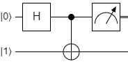

1 Introduction
Part I described how quantum computers work, to the extent that they do, but skipped lightly over the question of why people are putting so much work into building them. This essay is an attempt to explain, in language as plain as possible, what it is about quantum phenomena that might make quantum computing worthwhile.
1.1 Superposition and interference (recap)
The idea of quantum advantage relies on a combination of two phenomena that are consequences from the wave/particle nature of quantum systems.
One is that qubits exist in superpositions of states. That is, although any measurement of the qubit will show it to be in state \(| \uparrow \rangle\) or \(| \downarrow \rangle\), in general the qubit can be in a state that is a superposition of these two, and it has what is called a wavefunction or (equivalently) a state vector \(| \psi \rangle\) (the Greek letter psi) given by:
\[ | \psi \rangle = \alpha | \uparrow \rangle + \beta | \downarrow \rangle \]
The \(| \uparrow \rangle\) and \(| \downarrow \rangle\) states, which are the possible outcomes of measurement, are called basis states 1 or eigenstates. The coefficients \(\alpha\) and \(\beta\) are probability amplitudes, meaning that in any measurement of the state of \(| \psi \rangle\) the probability of seeing state \(|\uparrow \rangle\) is \(\alpha^2\) and the probability of seeing state \(| \downarrow \rangle\) is \(\beta^2\). Sometimes these are also called phases. This is something you just have to take on trust unless you want to dive properly into quantum mechanics.
You may have heard that quantum computers carry out many calculations in parallel, and this notion of superposition is where the idea of quantum parallelism comes from: that you can act on \(| \uparrow \rangle\) and \(| \downarrow \rangle\) at the same time because the qubit is in a superposition of states. You may even have heard some people talk about “many worlds” interpretations of quantum mechanics in which qubits are simultaneously “computing” each possible value of \(\alpha\) and \(\beta\) in different universes.
It is best to put these aside as unnecessary (and unjustified) science-fiction-inspired enthusiasms. Practically, superposition alone is not enough to deliver massive parallelism, because you only ever see either one of the two eigenstates at measurement: you can only ever get one bit of information out of qubit.
The second quantum phenomenon is interference. Even if the whole array is represented by a single quantum state, you can address pairs of qubits in such a way that the states interfere with each other, and so become, as they say, entangled.
For example, here is a “Bell state”. The individual qubits may be spin up or spin down. But if you measure one of them, you know the second.
\[ | \psi \rangle = \alpha | \uparrow \uparrow \rangle + \beta | \downarrow \downarrow \rangle \]
The system exists in a superposition of the two states, so neither qubit has a fixed value until it is measured. But if you measure the value of the spin for one particle (for example, the first) then you know the value for the other particle. Said this way, there is no more to this than “if I pull a left-footed shoe out of the box, then I know that the other shoe is right-footed”. There is more to it than this, but we can ignore it for most purposes.
Quantum computing relies on some clever ideas to combine the effects of superposition and interference so as to extract information from a set of qubits (by applying a sequence of gates and ending in measurements) that you could not get from classical bits.
2 H + CNOT
This draws heavily from the presentation in (Cleve et al. 1998). Throughout, there should really be factors of \(1/\sqrt{2}\) in front of some vectors, but I’m going to leave those out for simplicity.
Start with a qubit in state \(|0\rangle\) and apply a Hadamard gate. The qubit is now in a superposition state. We are also going to have a second qubit (a qubit in the second register) in state \(|1\rangle\) which is not touched
\[ |0\rangle \longrightarrow \fbox{H} \longrightarrow (|0\rangle + |1\rangle) \\ |1\rangle \longrightarrow \longrightarrow \longrightarrow \longrightarrow \longrightarrow |1\rangle \]
Although this is a single quantum system, described initially by a wavefunction \(|01\rangle\) and at the end by \(|+1\rangle\), the two qubits are independent, and a measurement of the first qubit can be carried out without any effect from the second qubit. The result of measuring has a 50% chance of giving 0 and a 50% chance of giving 1.
Now we add a CNOT gate, which addresses both qubits and flips the second if and only if the first is in state \(|1\rangle\). We can no longer treat each qubit separately, although we can measure a single qubit’s value. Perhaps this seems contradictory? I think it’s OK. The two-qubit system is now a correlated combination of the two qubits.

When we measure the value of the first qubit, it tells us something about the second qubit. If we see \(|0\rangle\), then we know the second qubit is in state \(|1\rangle\); if we see \(|1\rangle\) then we know the second qubit must have been flipped, and will be in state \(|0\rangle\).
So far, so good, but no new information here.
Now we do another step.
References
Footnotes
The phrase “basis states” has somewhat different meanings in other areas of quantum mechanics, but usually in quantum computing it refers to the measurement states.↩︎